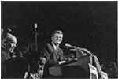
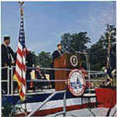
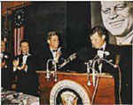
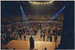
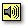

|




|
John
Fitzgerald Kennedy
Click
Here for Press Conferences
-
Some
Elements of the American Character
Independence Day oration, Boston, Massachusetts, July 4, 1946
-
Senator John F. Kennedy
Reads the Declaration
of Independence
Recorded exclusively for New York radio
station WQXR’s 1957 July 4th observance. 
-
Announcement
of Candidacy for the Presidency, January 2, 1960
-
"The
Presidency in 1960," January 14, 1960
-
Address
Accepting the Democratic Party Nomination for the Presidency, July
15, 1960
-
Address
to the Greater Houston Ministerial Association, September 12, 1960
(Religious Issue)
-
First
Televised Presidential Debate, September 26, 1960
-
Second
Televised Presidential Debate, October 7, 1960
-
Third
Televised Presidential Debate, October 13, 1960
-
Remarks
at the University of Michigan, October 14, 1960
(Proposes a Peace Corps)
-
Fourth
Televised Presidential Debate, October 21, 1960
-
Address
to the General Court of the Commonwealth of Massachusetts
January 9, 1961 ("City
upon a hill" speech)
-
Inaugural
Address, January 20, 1961
-
Statement
Upon Establishing the Peace Corps, March 1, 1961
-
Address
at a White House Reception for Members of Congress and for the
Diplomatic Corps of the Latin American Republics
March 13, 1961
(Announces the
Alliance for Progress)
-
Address
to the American Association of Newspaper Editors, April 20, 1961 (President
Kennedy speaks about the failed Bay of Pigs invasion)
-
News
Conference # 10, April 21, 1961
-
"The
President and the Press," April 27, 1961
-
Special
Message to the Congress on Urgent National Needs, May 25, 1961
(Establishes
goal of landing a man on the moon.)
-
Radio
and Television Report to the American People on the Berlin Crisis,
July 25, 1961
-
Address
to the General Assembly of the United Nations, September 25, 1961
-
Address
at the Inaugural Anniversary Dinner, January 20, 1962
(Humorous parody of
the Inaugural Address)
-
Address
at the University of California, Berkeley, March 23, 1962
-
News
Conference #30, April 11, 1962 (The
"Steel Crisis")
-
Commencement
Address at Yale University, June 11, 1962
-
Address
at Independence Hall, Philadelphia, July 4, 1962
-
Address
at Rice University on the Nation's Space Effort, September 12,
1962
-
Remarks
at the America's Cup Dinner Given by the Australian Ambassador,
September 14, 1962
("...And we go back to the sea, whether it
is to sail or to watch it we are going back from whence we
came.")
-
Radio
and TV Address on the Situation in Mississippi, September 30, 1962
-
Radio
and TV Report on the Soviet Arms Buildup in Cuba, October 22, 1962
(Naval quarantine of Cuba)
-
Remarks
in Nashville at the 90th Convocation of Vanderbilt University, May
18, 1963
-
Commencement
Address at American University, June 10, 1963
(Beginning of detente)
-
Radio
and TV Report on Civil Rights, June 11, 1963
(Civil rights issue represents a "moral
crisis")
-
Remarks
at the Rudolph Wilde Platz, June 26, 1963
(Berlin Wall
speech:"Ich bin ein Berliner.")
-
Address
to the Irish Parliament, June 28, 1963
-
Radio
and TV Address on the Nuclear Test Ban Treaty, July 26, 1963
-
Remarks
at the U.S. Naval Academy, August 1, 1963
-
Address
to the General Assembly of the United Nations, September 20, 1963
-
Remarks
at Amherst College, October 26, 1963 (Importance
of the Arts)
-
Remarks
at Dedication of the Aerospace Medical Health Center,
San Antonio, Texas, November 21, 1963 ("This
Nation has tossed its cap over the wall of space, and we have no
choice but to follow it.")
-
Remarks
Prepared for Delivery at the Trade Mart in Dallas, November 22,
1963
-
Remarks
Prepared for Delivery to the Texas State Democratic Convention,
Austin, November 22, 1963.
Robert F.
Kennedy
-
Tribute
to John F. Kennedy at Democratic National Convention, Atlantic City,
August 27, 1964
-
Day of
Affirmation Address, University of Capetown, South Africa, June 6,
1966 (News release version)
-
Day
of Affirmation Address, University of Capetown, South Africa, June
6, 1966 (As Delivered)
-
Town
Meeting of the World, May 15, 1967 (Joint
appearance with Gov. Ronald Reagan discussing the war in Vietnam.)
-
Statement
on the Assassination of Martin Luther King, Jr., April 4,
1968
Edward M.
Kennedy
-
Tribute
to Senator Robert F. Kennedy, St. Patrick's Cathedral, June 8 ,
1968
-
Address
to the Democratic National Convention, New York, August 12, 1980
-
Tribute
to John F. Kennedy, Jr., Church of St. Thomas More, New York, July
23, 1999
-
Remarks
of Senator Edward M. Kennedy on Health Care, April 28, 2002, John
F. Kennedy Library
|